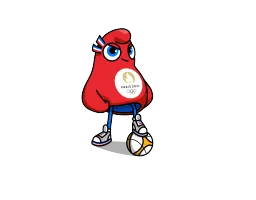
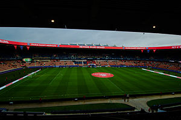

Première étape : Constitution des poules

🔍
A l'heure où est écrit ce programme seules 10 sélections sont officielement qualifiées.
Les deux places pour les pays de la CAF seront attribuées à l'issue du tournoi de qualification
olympique ayant lieu du 1er au 9 avril 2024.
Les pays participant sont le Cameroun, le Ghana, le Maroc, le Nigeria, l'Afrique du Sud, la Tanzanie, la Tunisie et la Zambie.
Pour plus de simplicité deux pays ont été choisis arbitrairement ceux qui s'étaient
qualifiés aux derniers JO de 2020 : la Zambie et le Cameroun.
De la même manière, les groupes ont été constitués avant le tirage au sort officiel.

stade : Parc des Princes
ville : Paris
capacité : 47929
Après consultation de nos plus grands experts les équipes qualifiées
à l'issue de la phase de poule seront :